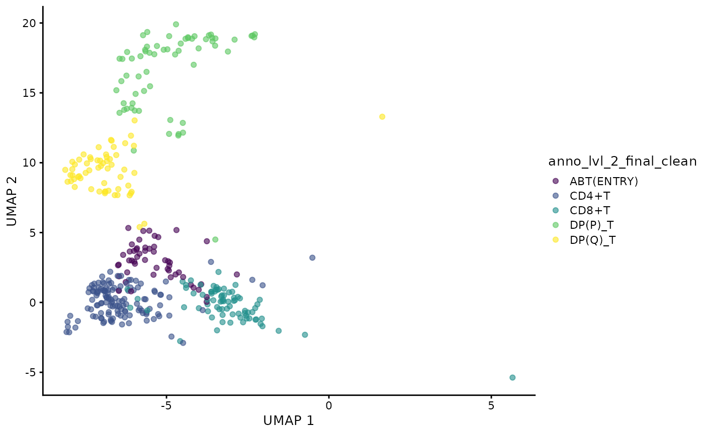
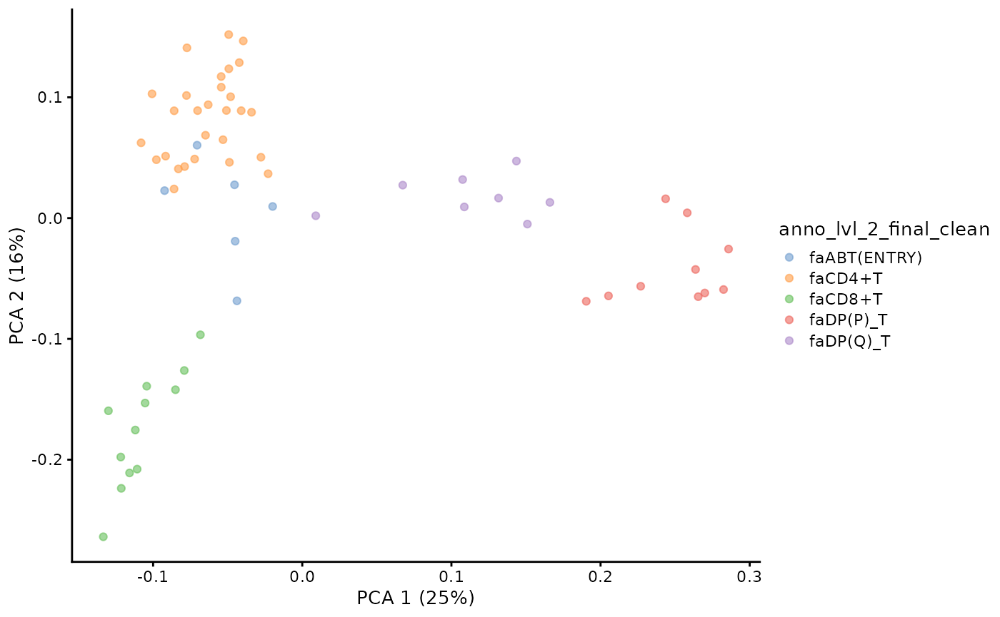
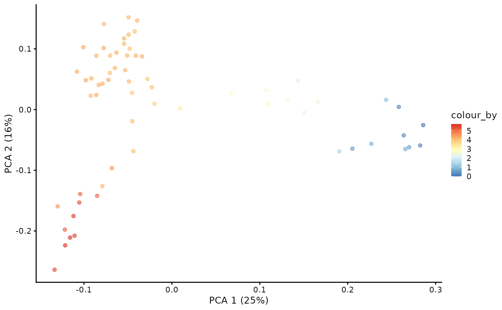
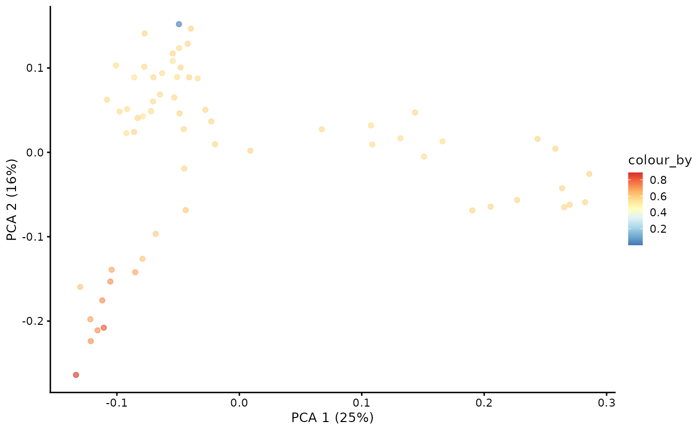
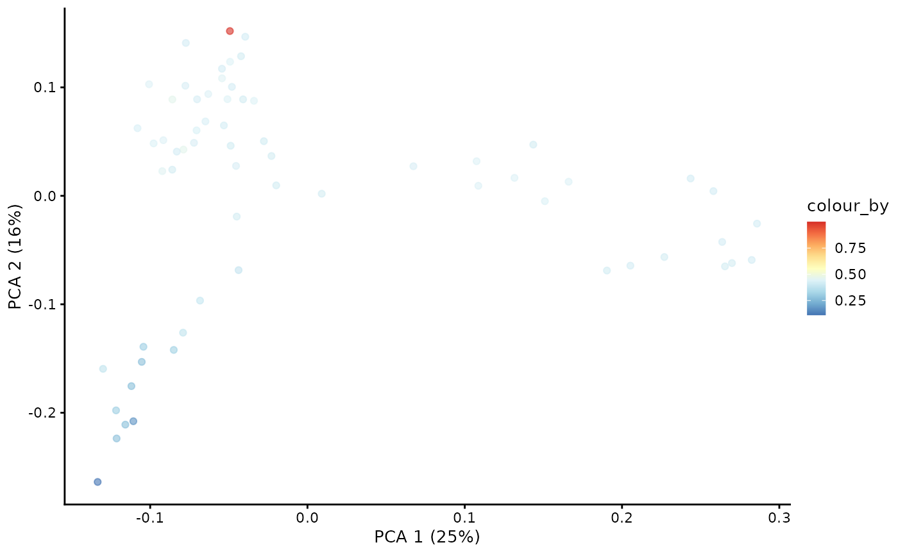
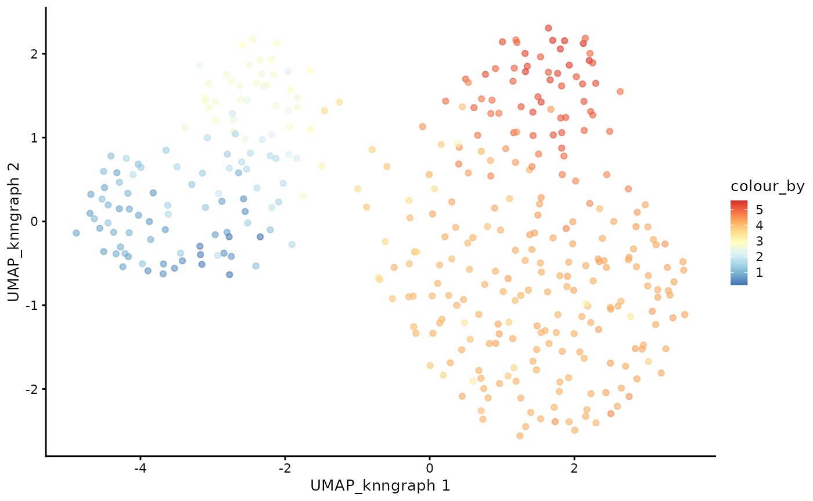
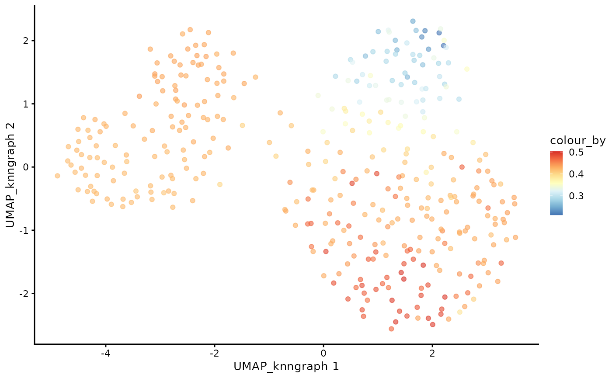
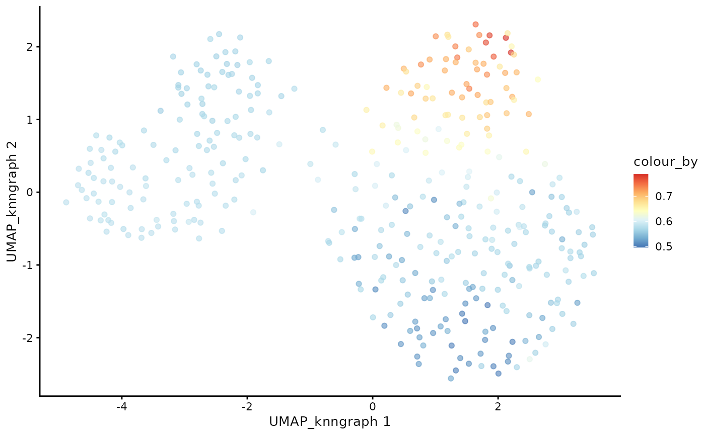

Single-cell Immune Repertoire Trajectory Analysis Starting From scRepertoire
2025-02-06
vignette_from_scRepertoire.Rmd


Foreword
Welcome to dandelionR!
dandelionR is an R package for performing single-cell
immune repertoire trajectory analysis, based on the original python
implementation in dandelion.
It provides all the necessary tools to interface with scRepertoire and a custom implementation of absorbing markov chain for pseudotime inference, inspired based on the palantir python package.
This is a work in progress, so please feel free to open an issue if you encounter any problems or have any suggestions for improvement.
Installation
You can install dandelionR from GitHub with:
if (!requireNamespace("devtools", quietly = TRUE)) {
install.packages("devtools")
}
if (!requireNamespace("BiocManager", quietly = TRUE)) {
install.packages("BiocManager")
}
if (!requireNamespace("scater", quietly = TRUE)) { # only for the tutorial
BiocManager::install("scater")
}
devtools::install_github("tuonglab/dandelionR", dependencies = TRUE)In a standard analysis workflow in R, users probably choose to read
in their VDJ data with scRepertoire.
In this vignette, we will demonstrate how to perform TCR trajectory
analysis starting from ‘raw’ data i.e. just a standard single-cell gene
expression data (stored in SingleCellExperiment) and VDJ
data (in AIRR format).
Install scRepertoire if you haven’t already.
if (!requireNamespace("scRepertoire", quietly = TRUE)) { # only for the tutorial
BiocManager::install("scRepertoire")
}
# or
devtools::install_github("ncborcherding/scRepertoire")Usage
Load the demo data
Due to size limitations of the package, we have provided a very trimmed down version of the demo data to ~2000 cells. The full dataset can be found here accordingly: GEX - https://developmental.cellatlas.io/fetal-immune (Lymphoid Cells) and VDJ - https://github.com/zktuong/dandelion-demo-files/tree/master/dandelion_manuscript/data/dandelion-remap
Check out the other vignette for an example dataset that starts from
the original dandelion output associated with the original
manuscript.
We will set the seed so that the plots and results are consistent.
set.seed(123)Use scRepertoire to load the VDJ data
For the trajectory analysis work here, we are focusing on the main
productive TCR chains. Therefore we will flag
filterMulti = TRUE, which will keep the selection of the 2
corresponding chains with the highest expression for a single barcode.
For more details, refer to scRepertoire’s documentation.
Note: There is a known issue with
combineTCR shuffling the order of the
SingleCellExperiment colData and this may not
have been updated in the latest version of scRepertoire on
Bioconductor (release 3.20). If you encounter this issue, please install
the development version of scRepertoire from GitHub:
devtools::install_github("ncborcherding/scRepertoire")
contig.list <- loadContigs(input = demo_airr, format = "AIRR")
# Format to `scRepertoire`'s requirements and some light filtering
combined.TCR <- combineTCR(contig.list,
removeNA = TRUE,
removeMulti = FALSE,
filterMulti = TRUE
)Merging VDJ data with gene expression data
Next we will combine the gene expression data with the VDJ data to
create a SingleCellExperiment object.
sce <- combineExpression(combined.TCR, demo_sce)Initiate dandelionR workflow
Here, the data is ready to be used for the pseudobulk and trajectory
analysis workflow in dandelionR.
Because this is a alpha-beta TCR data, we will set the
mode_option to “abT”. This will append abT to
the relevant columns holding the VDJ gene information. If you are going
to try other types of VDJ data e.g. BCR, you should set
mode_option to “B” instead. And this argument should be
consistently set with the vdjPseudobulk function later.
Since the TCR data is already filtered for productive chains in
combineTCR, we will set
already.productive = TRUE and can keep
allowed_chain_status as NULL.
We will also subset the data to only include the main T-cell types: CD8+T, CD4+T, ABT(ENTRY), DP(P)_T, DP(Q)_T.
sce <- setupVdjPseudobulk(sce,
mode_option = "abT",
already.productive = TRUE,
subsetby = "anno_lvl_2_final_clean",
groups = c("CD8+T", "CD4+T", "ABT(ENTRY)", "DP(P)_T", "DP(Q)_T")
)The main output of this function is a
SingleCellExperiment object with the relevant VDJ
information appended to the colData, particularly the
columns with the _main suffix
e.g. v_call_abT_VJ_main, j_call_abT_VJ_main
etc.
head(colData(sce))## DataFrame with 6 rows and 35 columns
## n_counts n_genes file mito
## <numeric> <integer> <factor> <numeric>
## FCAImmP7851891-CCTACCATCGGACAAG 2947 1275 FCAImmP7851891 0.0105192
## FCAImmP7851892-ACGGGCTCAGCATGAG 4969 1971 FCAImmP7851892 0.0245522
## FCAImmP7803035-CCAGCGATCCGAAGAG 7230 1733 FCAImmP7803035 0.0302905
## FCAImmP7528296-ATAAGAGTCAAAGACA 2504 901 FCAImmP7528296 0.0207668
## FCAImmP7555860-AACTTTCTCAACGGGA 8689 2037 FCAImmP7555860 0.0357924
## FCAImmP7292034-CGTCACTGTGGTCTCG 3111 1254 FCAImmP7292034 0.0228222
## doublet_scores predicted_doublets
## <numeric> <factor>
## FCAImmP7851891-CCTACCATCGGACAAG 0.0439224 False
## FCAImmP7851892-ACGGGCTCAGCATGAG 0.0610687 False
## FCAImmP7803035-CCAGCGATCCGAAGAG 0.0383747 False
## FCAImmP7528296-ATAAGAGTCAAAGACA 0.0236220 False
## FCAImmP7555860-AACTTTCTCAACGGGA 0.0738255 False
## FCAImmP7292034-CGTCACTGTGGTCTCG 0.0222841 False
## old_annotation_uniform organ Sort_id
## <factor> <factor> <factor>
## FCAImmP7851891-CCTACCATCGGACAAG SP T CELL TH TOT
## FCAImmP7851892-ACGGGCTCAGCATGAG DP T CELL TH TOT
## FCAImmP7803035-CCAGCGATCCGAAGAG SP T CELL SK CD45P
## FCAImmP7528296-ATAAGAGTCAAAGACA SP T CELL SK CD45P
## FCAImmP7555860-AACTTTCTCAACGGGA SP T CELL TH CD45P
## FCAImmP7292034-CGTCACTGTGGTCTCG SP T CELL TH TOT
## age method donor sex
## <integer> <factor> <factor> <factor>
## FCAImmP7851891-CCTACCATCGGACAAG 11 5GEX F64 female
## FCAImmP7851892-ACGGGCTCAGCATGAG 12 5GEX F67 female
## FCAImmP7803035-CCAGCGATCCGAAGAG 14 5GEX F51 female
## FCAImmP7528296-ATAAGAGTCAAAGACA 12 5GEX F38 male
## FCAImmP7555860-AACTTTCTCAACGGGA 16 5GEX F41 female
## FCAImmP7292034-CGTCACTGTGGTCTCG 14 5GEX F30 male
## Sample scvi_clusters
## <factor> <factor>
## FCAImmP7851891-CCTACCATCGGACAAG F64_TH_TOT_FCAImmP7851891 14
## FCAImmP7851892-ACGGGCTCAGCATGAG F67_TH_TOT_FCAImmP7851892 4
## FCAImmP7803035-CCAGCGATCCGAAGAG F51_SK_CD45P_FCAImmP7803035 2
## FCAImmP7528296-ATAAGAGTCAAAGACA F38_SK_CD45P_FCAImmP7528296 2
## FCAImmP7555860-AACTTTCTCAACGGGA F41_TH_CD45P_FCAImmP7555860 2
## FCAImmP7292034-CGTCACTGTGGTCTCG F30_TH_TOT_FCAImmP7292034 14
## is_maternal_contaminant anno_lvl_2_final_clean
## <logical> <factor>
## FCAImmP7851891-CCTACCATCGGACAAG FALSE ABT(ENTRY)
## FCAImmP7851892-ACGGGCTCAGCATGAG FALSE DP(Q)_T
## FCAImmP7803035-CCAGCGATCCGAAGAG FALSE CD4+T
## FCAImmP7528296-ATAAGAGTCAAAGACA FALSE CD4+T
## FCAImmP7555860-AACTTTCTCAACGGGA FALSE CD4+T
## FCAImmP7292034-CGTCACTGTGGTCTCG FALSE ABT(ENTRY)
## celltype_annotation CTgene
## <factor> <character>
## FCAImmP7851891-CCTACCATCGGACAAG ABT(ENTRY) TRAV13-1*02.TRAJ34*0..
## FCAImmP7851892-ACGGGCTCAGCATGAG DP(Q)_T TRAV12-2*01.TRAJ53*0..
## FCAImmP7803035-CCAGCGATCCGAAGAG CD4+T TRAV21*02.TRAJ33*01...
## FCAImmP7528296-ATAAGAGTCAAAGACA CD4+T TRAV38-2/DV8*01.TRAJ..
## FCAImmP7555860-AACTTTCTCAACGGGA CD4+T TRAV12-1*01.TRAJ6*01..
## FCAImmP7292034-CGTCACTGTGGTCTCG ABT(ENTRY) TRAV1-1*01.TRAJ32*02..
## CTnt CTaa
## <character> <character>
## FCAImmP7851891-CCTACCATCGGACAAG TGTGCAGCAAGTATGAACAC.. CAASMNTDKLIF_CASSLTG..
## FCAImmP7851892-ACGGGCTCAGCATGAG TGTGCCGTGTGGAGGTAGCA.. CAVWR*QL*TDI_CASRTGN..
## FCAImmP7803035-CCAGCGATCCGAAGAG TGTGCTTCTATGGATAGCAA.. CASMDSNYQLIW_CASSLTS..
## FCAImmP7528296-ATAAGAGTCAAAGACA TGTGCTTATAGGAGCGTTCA.. CAYRSVQGAQKLVF_CASSW..
## FCAImmP7555860-AACTTTCTCAACGGGA TGTGTGGTGAACATAAGAGG.. CVVNIRGSYIPTF_CSARDL..
## FCAImmP7292034-CGTCACTGTGGTCTCG TGCGCTGTGAGAGATCAGTA.. CAVRDQYGGATNKLIF_CAS..
## CTstrict clonalProportion
## <character> <numeric>
## FCAImmP7851891-CCTACCATCGGACAAG TRAV13-1*02.TRAJ34*0.. 0.0416667
## FCAImmP7851892-ACGGGCTCAGCATGAG TRAV12-2*01.TRAJ53*0.. 0.0277778
## FCAImmP7803035-CCAGCGATCCGAAGAG TRAV21*02.TRAJ33*01... 0.0370370
## FCAImmP7528296-ATAAGAGTCAAAGACA TRAV38-2/DV8*01.TRAJ.. 0.0909091
## FCAImmP7555860-AACTTTCTCAACGGGA TRAV12-1*01.TRAJ6*01.. 0.0476190
## FCAImmP7292034-CGTCACTGTGGTCTCG TRAV1-1*01.TRAJ32*02.. 0.0204082
## clonalFrequency cloneSize
## <integer> <factor>
## FCAImmP7851891-CCTACCATCGGACAAG 1 Large (0.01 < X <= 0.1)
## FCAImmP7851892-ACGGGCTCAGCATGAG 1 Large (0.01 < X <= 0.1)
## FCAImmP7803035-CCAGCGATCCGAAGAG 1 Large (0.01 < X <= 0.1)
## FCAImmP7528296-ATAAGAGTCAAAGACA 1 Large (0.01 < X <= 0.1)
## FCAImmP7555860-AACTTTCTCAACGGGA 1 Large (0.01 < X <= 0.1)
## FCAImmP7292034-CGTCACTGTGGTCTCG 1 Large (0.01 < X <= 0.1)
## v_call_abT_VDJ d_call_abT_VDJ j_call_abT_VDJ
## <character> <character> <character>
## FCAImmP7851891-CCTACCATCGGACAAG TRAV13-1*02 TRAJ34*01 TRBV11-3*04
## FCAImmP7851892-ACGGGCTCAGCATGAG TRAV12-2*01 TRAJ53*01 TRBV19*01
## FCAImmP7803035-CCAGCGATCCGAAGAG TRAV21*02 TRAJ33*01 TRBV5-4*01
## FCAImmP7528296-ATAAGAGTCAAAGACA TRAV38-2/DV8*01 TRAJ54*01 TRBV6-6*01
## FCAImmP7555860-AACTTTCTCAACGGGA TRAV12-1*01 TRAJ6*01 TRBV20-1*01
## FCAImmP7292034-CGTCACTGTGGTCTCG TRAV1-1*01 TRAJ32*02 TRBV12-4*01
## v_call_abT_VJ j_call_abT_VJ v_call_abT_VDJ_main
## <character> <character> <character>
## FCAImmP7851891-CCTACCATCGGACAAG TRBD1*01 TRBJ1-2*01 TRAV13-1*02
## FCAImmP7851892-ACGGGCTCAGCATGAG NA TRBJ1-1*01 TRAV12-2*01
## FCAImmP7803035-CCAGCGATCCGAAGAG TRBD2*02 TRBJ2-1*01 TRAV21*02
## FCAImmP7528296-ATAAGAGTCAAAGACA NA TRBJ1-3*01 TRAV38-2/DV8*01
## FCAImmP7555860-AACTTTCTCAACGGGA TRBD2*02 TRBJ2-7*01 TRAV12-1*01
## FCAImmP7292034-CGTCACTGTGGTCTCG NA TRBJ1-2*01 TRAV1-1*01
## d_call_abT_VDJ_main j_call_abT_VDJ_main
## <character> <character>
## FCAImmP7851891-CCTACCATCGGACAAG TRAJ34*01 TRBV11-3*04
## FCAImmP7851892-ACGGGCTCAGCATGAG TRAJ53*01 TRBV19*01
## FCAImmP7803035-CCAGCGATCCGAAGAG TRAJ33*01 TRBV5-4*01
## FCAImmP7528296-ATAAGAGTCAAAGACA TRAJ54*01 TRBV6-6*01
## FCAImmP7555860-AACTTTCTCAACGGGA TRAJ6*01 TRBV20-1*01
## FCAImmP7292034-CGTCACTGTGGTCTCG TRAJ32*02 TRBV12-4*01
## v_call_abT_VJ_main j_call_abT_VJ_main
## <character> <character>
## FCAImmP7851891-CCTACCATCGGACAAG TRBD1*01 TRBJ1-2*01
## FCAImmP7851892-ACGGGCTCAGCATGAG NA TRBJ1-1*01
## FCAImmP7803035-CCAGCGATCCGAAGAG TRBD2*02 TRBJ2-1*01
## FCAImmP7528296-ATAAGAGTCAAAGACA NA TRBJ1-3*01
## FCAImmP7555860-AACTTTCTCAACGGGA TRBD2*02 TRBJ2-7*01
## FCAImmP7292034-CGTCACTGTGGTCTCG NA TRBJ1-2*01Visualise the UMAP of the filtered data.
plotUMAP(sce, color_by = "anno_lvl_2_final_clean")
Milo object and neighbourhood graph construction
We will use miloR to create the pseudobulks based on the gene expression data. The goal is to construct a neighbourhood graph with many neighbors with which we can sample the representative neighbours to form the objects.
library(miloR)
milo_object <- Milo(sce)
milo_object <- buildGraph(milo_object, k = 30, d = 20, reduced.dim = "X_scvi")
milo_object <- makeNhoods(milo_object, reduced_dims = "X_scvi", d = 20, prop = 0.3)Construct pseudobulked VDJ feature space
Next, we will construct the pseudobulked VDJ feature space using the neighbourhood graph constructed above. We will also run PCA on the pseudobulked VDJ feature space.
pb.milo <- vdjPseudobulk(milo_object, mode_option = "abT", col_to_take = "anno_lvl_2_final_clean")Inspect the newly created pb.milo object.
pb.milo ## class: Milo
## dim: 129 64
## metadata(0):
## assays(1): Feature_space
## rownames(129): TRAV1-1*01 TRAV1-2*01 ... TRBJ2-7*01 TRBJ2-7*02
## rowData names(0):
## colnames(64): 179 93 ... 269 125
## colData names(3): anno_lvl_2_final_clean
## anno_lvl_2_final_clean_fraction cell_count
## reducedDimNames(0):
## mainExpName: NULL
## altExpNames(0):
## nhoods dimensions(2): 64 382
## nhoodCounts dimensions(2): 1 1
## nhoodDistances dimension(1): 0
## graph names(0):
## nhoodIndex names(1): 0
## nhoodExpression dimension(2): 1 1
## nhoodReducedDim names(0):
## nhoodGraph names(0):
## nhoodAdjacency dimension(2): 1 1We can compute and visualise the PCA of the pseudobulked VDJ feature space.
pb.milo <- runPCA(pb.milo, assay.type = "Feature_space", ncomponents = 20)
plotPCA(pb.milo, color_by = "anno_lvl_2_final_clean")
TCR trajectory inference using Absorbing Markov Chain
In the original dandelion python package, the trajectory
inference is done using the palantir package. Here, we
implement the absorbing markov chain approach in dandelionR to infer the
trajectory, leveraging on destiny for diffusion map
computation.
Define root and branch tips
# extract the PCA matrix
pca <- t(as.matrix(reducedDim(pb.milo, type = "PCA")))
# define the CD8 terminal cell as the top-most cell and CD4 terminal cell as the bottom-most cell
branch.tips <- c(which.max(pca[2, ]), which.min(pca[2, ]))
names(branch.tips) <- c("CD8+T", "CD4+T")
# define the start of our trajectory as the right-most cell
root <- which.max(pca[1, ])Construct diffusion map
library(destiny)
# Run diffusion map on the PCA
dm <- DiffusionMap(t(pca), n_pcs = 10, n_eigs = 10)Compute diffusion pseudotime on diffusion map
# the root is automatically called DPT + index of the root cell
DPTroot <- paste0("DPT", root)
# store pseudotime in milo object
pb.milo$pseudotime <- dif.pse[[DPTroot]]
# set the colours for pseudotime
pal <- colorRampPalette(rev((RColorBrewer::brewer.pal(9, "RdYlBu"))))(255)
plotPCA(pb.milo, color_by = "pseudotime") + scale_colour_gradientn(colours = pal)
Markov chain construction on the pseudobulk VDJ feature space
This step will compute the Markov chain probabilities on the
pseudobulk VDJ feature space. It will return the branch probabilities in
the colData and the column name corresponds to the branch
tips defined earlier.
pb.milo <- markovProbability(
milo = pb.milo,
diffusionmap = dm,
terminal_state = branch.tips,
root_cell = root,
pseudotime_key = "pseudotime",
knn = 30
)Inspect the pb.milo object to see the newly added
columns.
head(colData(pb.milo))## DataFrame with 6 rows and 6 columns
## anno_lvl_2_final_clean anno_lvl_2_final_clean_fraction cell_count
## <character> <numeric> <numeric>
## 179 faDP(P)_T 0.605263 38
## 93 faCD8+T 0.750000 48
## 75 faDP(Q)_T 0.907407 54
## 279 faDP(Q)_T 0.913793 58
## 277 faCD4+T 0.936170 47
## 375 faDP(P)_T 0.632653 49
## pseudotime CD8+T CD4+T
## <numeric> <numeric> <numeric>
## 179 0.449589 0.578761 0.421239
## 93 5.584408 0.729279 0.270721
## 75 2.642788 0.559456 0.440544
## 279 2.595964 0.559617 0.440383
## 277 4.314940 0.565749 0.434251
## 375 0.134566 0.578744 0.421256Visualising branch probabilities
With the Markov chain probabilities computed, we can visualise the branch probabilities towards CD4+ or CD8+ T-cell fate on the PCA plot.
plotPCA(pb.milo, color_by = "CD8+T") + scale_color_gradientn(colors = pal)
plotPCA(pb.milo, color_by = "CD4+T") + scale_color_gradientn(colors = pal)
Transfer
The next step is to project the pseudotime and the branch probability information from the pseudobulks back to each cell in the dataset. If the cell do not belong to any of the pseudobulk, it will be removed. If a cell belongs to multiple pseudobulk samples, its value should be calculated as a weighted average of the corresponding values from each pseudobulk, where each weight is inverse of the size of the pseudobulk.
Project pseudobulk data to each cell
cdata <- projectPseudotimeToCell(milo_object, pb.milo, branch.tips)Visualise the trajectory data on a per cell basis
plotUMAP(cdata, color_by = "anno_lvl_2_final_clean", dimred = "UMAP_knngraph")
plotUMAP(cdata, color_by = "pseudotime", dimred = "UMAP_knngraph") + scale_color_gradientn(colors = pal)
plotUMAP(cdata, color_by = "CD4+T", dimred = "UMAP_knngraph") + scale_color_gradientn(colors = pal)
plotUMAP(cdata, color_by = "CD8+T", dimred = "UMAP_knngraph") + scale_color_gradientn(colors = pal)
And that’s it! We have successfully inferred the trajectory of the T-cells in this dataset!
Session info
## R Under development (unstable) (2025-02-03 r87683)
## Platform: x86_64-pc-linux-gnu
## Running under: Ubuntu 24.04.1 LTS
##
## Matrix products: default
## BLAS: /usr/lib/x86_64-linux-gnu/openblas-pthread/libblas.so.3
## LAPACK: /usr/lib/x86_64-linux-gnu/openblas-pthread/libopenblasp-r0.3.26.so; LAPACK version 3.12.0
##
## locale:
## [1] LC_CTYPE=C.UTF-8 LC_NUMERIC=C LC_TIME=C.UTF-8
## [4] LC_COLLATE=C.UTF-8 LC_MONETARY=C.UTF-8 LC_MESSAGES=C.UTF-8
## [7] LC_PAPER=C.UTF-8 LC_NAME=C LC_ADDRESS=C
## [10] LC_TELEPHONE=C LC_MEASUREMENT=C.UTF-8 LC_IDENTIFICATION=C
##
## time zone: UTC
## tzcode source: system (glibc)
##
## attached base packages:
## [1] stats4 stats graphics grDevices utils datasets methods
## [8] base
##
## other attached packages:
## [1] miloR_2.3.0 edgeR_4.5.2
## [3] limma_3.63.3 scater_1.35.1
## [5] scuttle_1.17.0 SingleCellExperiment_1.29.1
## [7] SummarizedExperiment_1.37.0 Biobase_2.67.0
## [9] GenomicRanges_1.59.1 GenomeInfoDb_1.43.4
## [11] IRanges_2.41.2 S4Vectors_0.45.2
## [13] BiocGenerics_0.53.6 generics_0.1.3
## [15] MatrixGenerics_1.19.1 matrixStats_1.5.0
## [17] scRepertoire_2.3.2 ggplot2_3.5.1
## [19] dandelionR_0.99.4 destiny_3.21.0
## [21] BiocStyle_2.35.0
##
## loaded via a namespace (and not attached):
## [1] cubature_2.1.1 splines_4.5.0 tibble_3.2.1
## [4] polyclip_1.10-7 xts_0.14.1 lifecycle_1.0.4
## [7] globals_0.16.3 lattice_0.22-6 MASS_7.3-64
## [10] magrittr_2.0.3 vcd_1.4-13 sass_0.4.9
## [13] rmarkdown_2.29 jquerylib_0.1.4 yaml_2.3.10
## [16] spam_2.11-1 sp_2.2-0 cowplot_1.1.3
## [19] RColorBrewer_1.1-3 abind_1.4-8 purrr_1.0.2
## [22] ggraph_2.2.1 nnet_7.3-20 pracma_2.4.4
## [25] tweenr_2.0.3 evmix_2.12 GenomeInfoDbData_1.2.13
## [28] ggrepel_0.9.6 irlba_2.3.5.1 listenv_0.9.1
## [31] iNEXT_3.0.1 MatrixModels_0.5-3 RSpectra_0.16-2
## [34] parallelly_1.42.0 pkgdown_2.1.1 codetools_0.2-20
## [37] smoother_1.3 DelayedArray_0.33.5 ggforce_0.4.2
## [40] tidyselect_1.2.1 UCSC.utils_1.3.1 farver_2.1.2
## [43] ScaledMatrix_1.15.0 viridis_0.6.5 jsonlite_1.8.9
## [46] BiocNeighbors_2.1.2 e1071_1.7-16 tidygraph_1.3.1
## [49] progressr_0.15.1 Formula_1.2-5 survival_3.8-3
## [52] ggalluvial_0.12.5 systemfonts_1.2.1 tools_4.5.0
## [55] ragg_1.3.3 stringdist_0.9.15 Rcpp_1.0.14
## [58] glue_1.8.0 gridExtra_2.3 SparseArray_1.7.5
## [61] laeken_0.5.3 xfun_0.50 ranger_0.17.0
## [64] TTR_0.24.4 ggthemes_5.1.0 dplyr_1.1.4
## [67] withr_3.0.2 numDeriv_2016.8-1.1 BiocManager_1.30.25
## [70] fastmap_1.2.0 boot_1.3-31 bluster_1.17.0
## [73] SparseM_1.84-2 VIM_6.2.2 digest_0.6.37
## [76] rsvd_1.0.5 R6_2.5.1 textshaping_1.0.0
## [79] colorspace_2.1-1 gtools_3.9.5 tidyr_1.3.1
## [82] hexbin_1.28.5 data.table_1.16.4 robustbase_0.99-4-1
## [85] class_7.3-23 graphlayouts_1.2.2 httr_1.4.7
## [88] htmlwidgets_1.6.4 S4Arrays_1.7.2 scatterplot3d_0.3-44
## [91] uwot_0.2.2 pkgconfig_2.0.3 gtable_0.3.6
## [94] lmtest_0.9-40 XVector_0.47.2 htmltools_0.5.8.1
## [97] carData_3.0-5 dotCall64_1.2 SeuratObject_5.0.2
## [100] scales_1.3.0 knn.covertree_1.0 ggdendro_0.2.0
## [103] knitr_1.49 rjson_0.2.23 reshape2_1.4.4
## [106] curl_6.2.0 proxy_0.4-27 cachem_1.1.0
## [109] zoo_1.8-12 stringr_1.5.1 parallel_4.5.0
## [112] vipor_0.4.7 desc_1.4.3 pillar_1.10.1
## [115] grid_4.5.0 vctrs_0.6.5 pcaMethods_1.99.0
## [118] VGAM_1.1-12 car_3.1-3 BiocSingular_1.23.0
## [121] beachmat_2.23.6 cluster_2.1.8 beeswarm_0.4.0
## [124] evaluate_1.0.3 truncdist_1.0-2 cli_3.6.3
## [127] locfit_1.5-9.11 compiler_4.5.0 rlang_1.1.5
## [130] crayon_1.5.3 future.apply_1.11.3 labeling_0.4.3
## [133] plyr_1.8.9 fs_1.6.5 ggbeeswarm_0.7.2
## [136] stringi_1.8.4 viridisLite_0.4.2 BiocParallel_1.41.0
## [139] assertthat_0.2.1 gsl_2.1-8 munsell_0.5.1
## [142] quantreg_6.00 Matrix_1.7-2 RcppHNSW_0.6.0
## [145] RcppEigen_0.3.4.0.2 patchwork_1.3.0 future_1.34.0
## [148] statmod_1.5.0 evd_2.3-7.1 igraph_2.1.4
## [151] memoise_2.0.1 bslib_0.9.0 DEoptimR_1.1-3-1
## [154] ggplot.multistats_1.0.1